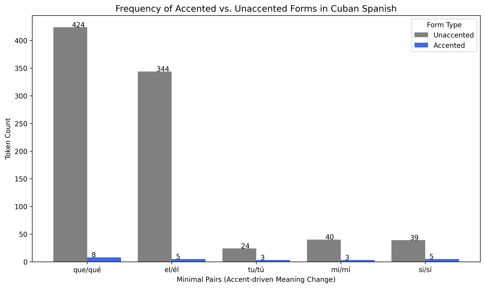

About
Hello, welcome to my research website! This project discusses orthographic and phonological changes in Cuban Spanish, specifically looking at -ado -> -ao and other variants. I also will be looking at accented vs. unaccented spellings (e.g., qué vs. que) to show differences in frequency. My main hypothesis is that unaccented spellings will be more frequent, since informal writing often omits written accents. I also expect reduced forms will appear more often than standard forms, reflecting well-documented Cuban Spanish lenition patterns.
Dataset
I used El Corpus Del Español to collect linguistic data from online blog-style postings, filtering for posts from Cuba. These posts included a variety of topics, spanning from political commentary to sports and media. I looked up specific words that follow this pattern, like "pescado" and "cuidado", as well as their simplified outputs "pescao" and "cuidao". Taking about 40 blog posts, I combined them in a text file to further clean and analyze the data.
Methods
This analysis explores some common sound changes in Cuban Spanish in casual speech (blogs, forums, news), specifically in written orthography. After collecting excerpts from El Corpus del Español, I cleaned the raw text by:
- converting text to lowercase
- removing punctuation, numerical figures, and spaces
- tokenizing each individual word in text
- keeping accent marks (comparing qué vs que)
In python, I used 're' to clean my text and locate spelling patterns reflecting the phonological changes ('pescao' from 'pescado'). Keeping accents and specific Spanish characters 'ñ' was important when cleaning this text to compare forms later. I got frequency counts with a word_freq() function, looping through tokens and counting them. To test the sound changes, I defined a list of target words (e.g., pescao ~ pescado) and then extracted all tokens ending in: -ao, -aos (from -ado/-ados), -aa, -aas (hypothetical -ada/-adas).
I did searches for all 8 forms (-ao, -ado, -aa, -ada, -aos, -ados, -adas and -aas), example of code line below:
ao_forms = [w for w in cuban_words if re.search(r'ao$', w)]
Each token was POS-tagged using the spaCy Spanish NLP model (es_core_news_sm)
to determine whether reduced forms are more common in particular grammatical categories
(e.g., adjectives vs. participles). Accent minimal pairs were also identified
(e.g., el vs. él), and their frequencies were visualized using grouped bar charts.
Disclaimer: ChatGPT was used for explaining code to myself and troubleshooting.
Results & Interpretation

The graph above shows frequency for all 8 standard and reduced forms that I analyzed. Reduced forms (-ao, -aos) clearly appear in the corpus, while their standard equivalents (-ado, -ados) remain more frequent overall. Notably, the predicted feminine reductions (-aa, -aas) never occur, suggesting that reduction primarily affects masculine participles (e.g., pescao from pescado).

The graph above shows the part of speech distribution for all 8 forms. When categorized by part of speech, reduced forms appear almost exclusively among participial adjectives and verbs, especially in everyday lexical items like cansao (tired) or acabao (finished). Nouns and other categories overwhelmingly prefer standard spellings. This suggests that reduction is not random, but tied to frequently used predicates in casual communication.
The graph above shows frequency for 5 common accented words vs their unaccented counterparts. This is showing a strong tendency to omit diacritics in informal writing. Pairs like qué/que and más/mas overwhelmingly appear in unaccented form, even when the accent is required to distinguish meaning. This trend reflects how digital writing often prioritizes speed and phonological similarity over orthographic accuracy, even in contexts where accents change grammatical role or lexical identity.
- Very high usage of unaccented forms in casual blog-style writing
- No usage of predicted feminine endings -aa and -aas, suggests morphological constraints on /d/ lenition
- Reduced masculine endings (-ao, -aos) are productive in casual Cuban online writing
- Accent omission is widespread, consistent with informal digital writing norms
For next steps, I would be interested in compiling data from more casual social media postings, more casual than blogs and news. ZunZuneo (dissolved in 2012), FaceBook, or Twitter/X could have data more accurate to spoken Cuban Spanish patterns.